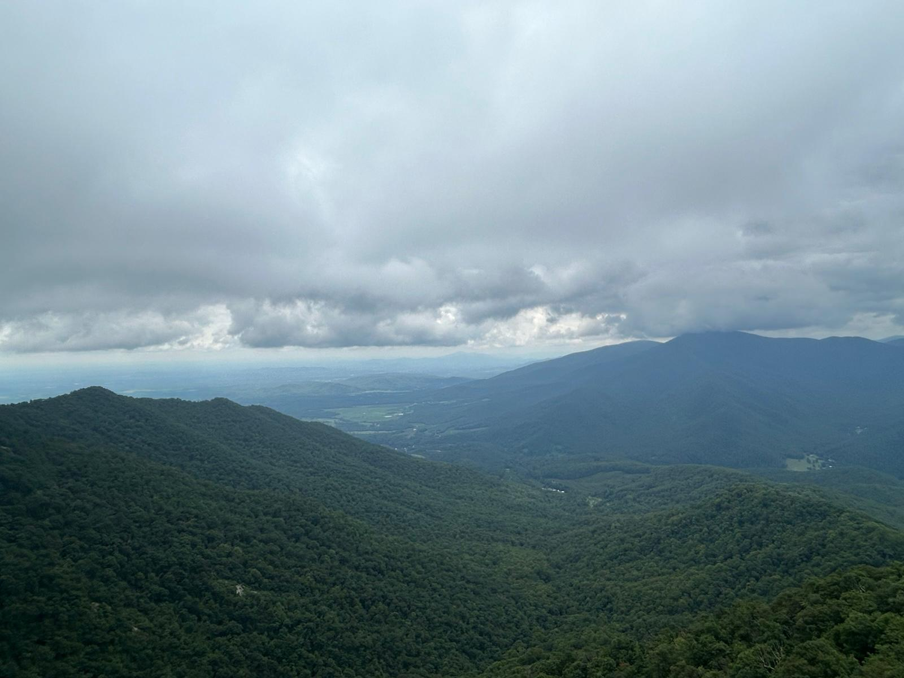
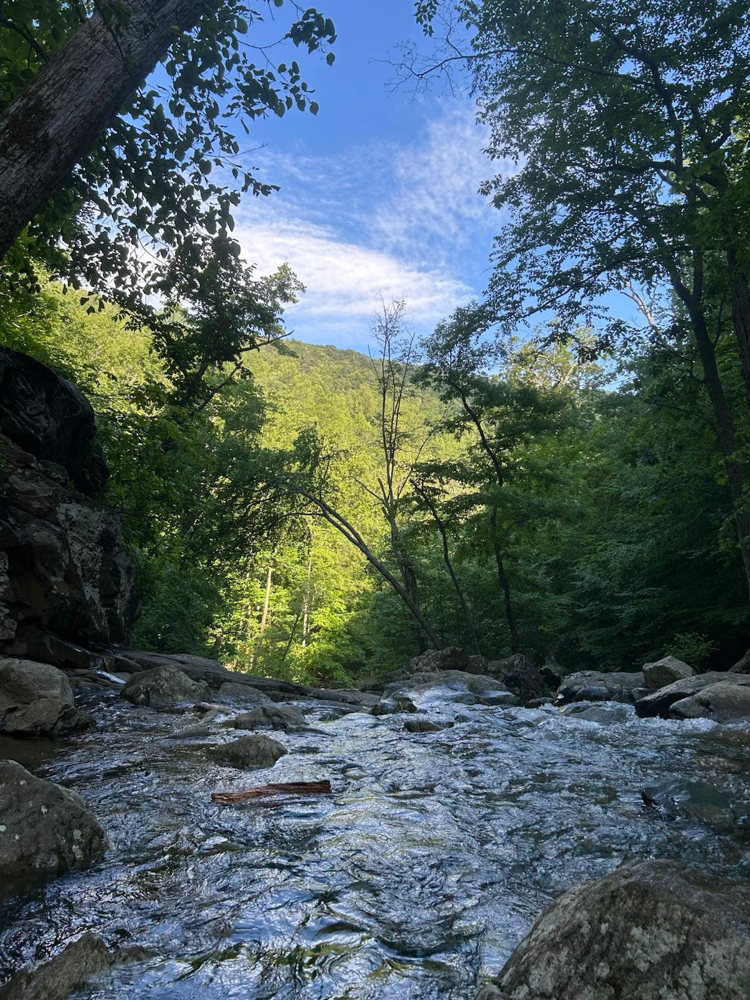

Hobbies
Hiking
I love going on hikes and exploring trails. This past summer, I completed several challenging hikes in the Appalachian Mountains and Shenandoah National Park.
McAfee Knob
Appalachian Trail, Virginia
One of the most photographed spots on the Appalachian Trail, offering stunning panoramic views from the iconic rock outcropping.

Three Ridges Trail
Appalachian Mountains, Virginia
A challenging loop trail with multiple peaks, beautiful waterfalls, and rewarding summit views.

White Oak Trail
Shenandoah National Park, Virginia
A scenic trail through Shenandoah's beautiful forests with diverse wildlife and peaceful mountain streams.